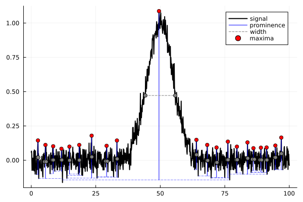

Measurements
Introduction
Various functions to measure the parameters of peaks visible on spectra are available.
A new core function is introduced in v1.1: find_peaks, which leverages the Peaks.jl package. This function allows you to, as its name says, find peaks in a signal and calculate various parameters, such as their heights, widths, centroids... The later calculation relies on the centroid function, which can be called independently.
Finally, earlier versions of Spectra had a peakmeas function to measure various parameters (height, width, centroid...). It works but please use find_peaks in your futur codes, it is much better. peakmeas will be removed in a future release of Spectra.
Example
Example signal
We first generate a dummy signal to play with:
using Plots, Spectra, Random
## the x axis
x = collect(0:0.1:100)
## a fake signal: perfect y
y_perfect = gaussian(x, 1.0, 50.0, 6.0)
## we add noise: observed y
y = y_perfect + 0.05*randn(size(x,1))
plot(x, y, label="Noisy observed signal", xlabel="X", ylabel="Y")GKS: cannot open display - headless operation mode activeEstimating parameters for one peak
For one peak, estimations can be done using peakmeas:
height_y, hwhm_y, position_y, centroid_y, smoothed_y = peakmeas(x,vec(y),smoothing = "yes", method= "savgol", y_smo_out = true)
println("Estimated peak height is $(height_y)")
println("Estimated peak hwhm is $(hwhm_y)")
println("Estimated peak position is $(position_y)")
println("Estimated peak centroid is $(centroid_y)")Estimated peak height is 1.0664761689545041
Estimated peak hwhm is 50.1
Estimated peak position is 5.350000000000001
Estimated peak centroid is 50.47233687220993peakmeas is basic. It does not work on multiple peaks. Prefer using find_peaks.
Find and measure multiple peaks
To find and measure parameters of a peak or multiple peaks in a signal, we can use find_peaks:
result = find_peaks(x, y, smoothing=false, method="gcvspline", window_size = 20)
println("Peak positions: ", result.peak_positions)
println("Peak heights: ", result.peak_heights)
println("Peak hwhms: ", result.peak_hwhms)
println("Peak centroids: ", result.peak_centroids)
result.plot_peaksPeak positions: [2.6, 5.5, 8.5, 11.7, 14.8, 18.6, 23.4, 29.2, 33.2, 49.5, 64.0, 68.2, 71.8, 76.2, 79.7, 83.8, 86.1, 89.0, 91.2, 94.6, 96.9]
Peak heights: [0.1440268909277853, 0.1113795553807282, 0.10189981812582416, 0.08362302250661711, 0.09917250444454916, 0.11116288869448546, 0.179084391097305, 0.10524447181142588, 0.14380950441320814, 1.0872141987666435, 0.1486029976053012, 0.11159524227285515, 0.09264602951389075, 0.13566034793508186, 0.09897498947700087, 0.1299386868408395, 0.08772010863618644, 0.09163740569503541, 0.0927594747560826, 0.10690179749635267, 0.16520097457747815]
Peak hwhms: [0.10000000000000009, 0.3500000000000001, 0.20000000000000018, 0.10000000000000053, 0.10000000000000053, 0.09999999999999964, 0.09999999999999964, 0.29999999999999893, 0.09999999999999787, 5.799999999999997, 0.09999999999999787, 0.15000000000000568, 0.14999999999999858, 0.14999999999999858, 0.20000000000000284, 0.10000000000000142, 0.3999999999999986, 0.25, 0.10000000000000142, 0.14999999999999858, 0.10000000000000142]
Peak centroids: [2.6, 5.529129841873346, 8.407171240651227, 11.7, 14.8, 18.6, 23.4, 29.110680536152763, 33.2, 50.01914554911684, 64.0, 68.20226949874993, 71.81418935345862, 76.19327171862955, 79.69745205882037, 83.8, 86.15309635422614, 88.95521665848568, 91.2, 94.57960930516627, 96.9]
Hum... it finds too much peaks here. We need to tweak the parameters of the find_peaks function. We can increase the min_height value to detect only peaks above a certain threshold. We can also smooth the signal, it will help filter the noise. Other options are possible, see the specific documentation of find_peaks.
result = find_peaks(x, y, smoothing=true, method="gcvspline", window_size = 20, min_height=0.2)
println("Peak positions: ", result.peak_positions)
println("Peak heights: ", result.peak_heights)
println("Peak hwhms: ", result.peak_hwhms)
println("Peak centroids: ", result.peak_centroids)
result.plot_peaksPeak positions: [50.1]
Peak heights: [0.9965230389928255]
Peak hwhms: [6.0]
Peak centroids: [50.01613708841698]Good! It works now better.
Peak centroid
The centroid of a peak or of a signal can also be measured using directly the centroid function. It accepts x-y inputs, list of x-y spectra, or arrays of ys spectra associated to a vector of x values, see the documentation of centroid[@ref].
centroid2 = centroid(x,y)
println("Estimated peak centroid is $(centroid2)")Functions API
Spectra.find_peaks — Functionfind_peaks(
x::Vector{Float64},
y::Vector{Float64};
smoothing::Bool = false,
window_size::Int = 20,
min_height::Float64 = 0., max_height::Float64 = Inf,
min_prom::Float64 = 0., max_prom::Float64 = Inf,
min_width::Float64 = 0., max_width::Float64 = Inf, relwidth::Float64 = 0.5,
kwargs...
)Identify peaks in spectral data (x, y) based on specified criteria such as height, prominence, and width.
It optionally applies smoothing to the signal before peak detection.
Arguments
x::Vector{Float64}: The x-axis values (e.g., wavelengths or time points).y::Vector{Float64}: The y-axis values (e.g., intensities).smoothing::Bool: Whether to apply smoothing to the signal before peak detection. Default isfalse.window_size::Int: Size of the window for peak detection (in indices). Default is20.min_height::Float64: Minimum height of peaks to consider. Default is0.0.max_height::Float64: Maximum height of peaks to consider. Default is100.0.min_prom::Float64: Minimum prominence of peaks to consider. Default is0.0.max_prom::Float64: Maximum prominence of peaks to consider. Default is infinity (Inf).min_width::Float64: Minimum width of peaks to consider (in indices). Default is0.0.max_width::Float64: Maximum width of peaks to consider (in indices). Default is infinity (Inf).relwidth::Float64: Relative width parameter for peak widths. Default is0.5.- Additional keyword arguments (
kwargs...) are passed to the smoothing function if smoothing is enabled.
Returns
A named tuple containing:
peak_positions::Vector{Float64}: X positions of detected peaks.peak_heights::Vector{Float64}: Heights of detected peaks.peak_prominences::Vector{Float64}: Prominences of detected peaks.peak_hwhms::Vector{Float64}: Half-width at half maximum values for detected peaks.peak_centroids::Vector{Float64}: Centroid positions for detected peaks.- A plot object showing the detected peaks (
plot_peaks), using the recipe from the Peaks.jl package.
Examples
Example 1: Basic peak detection
x = collect(1:1.0:100)
y = gaussian(x, 1.0, 30.0, 3.0) + lorentzian(x, 1.0, 60.0, 6.0) + 0.01*randn(length(x))
result = find_peaks(x, y; smoothing=false, window_size=10, min_height=0.2)
println("Peak positions: ", result.peak_positions)
println("Peak heights: ", result.peak_heights)
display(result.plot_peaks)Example 2: Peak detection with gcvspline smoothing
x = collect(1:1.0:100)
y = gaussian(x, 1.0, 30.0, 3.0) + lorentzian(x, 1.0, 60.0, 6.0) + 0.01*randn(length(x))
result = find_peaks(x, y; smoothing=true, method="gcvspline", window_size=10, min_height=0.2)
println("Peak positions: ", result.peak_positions)
println("Peak heights: ", result.peak_heights)
display(result.plot_peaks)Notes
- this function is a convenient wrapper around the Peaks.jl functionalities to find peaks in a vector y. For more control, you can directly use the Peaks.jl functions, the package should be available in your environment as it is a dependency for Spectra!
- for smoothing, try the
method = "gcvspline"ormethod = "savgol"options, which are the most efficient for peak detection. - the
window_sizeparameter is not in the units ofx, but in the units of index. For example, if you have 1000 points in your x-axis and you want to detect peaks with a window of 10 points, setwindow_size=10. - the
min_widthandmax_widthparameters are also not in the units ofx, but in the units of index. For example, if you have 1000 points in your x-axis and you want to detect peaks with a width of 10 points, setmin_width=10andmax_width=10. - the
relwidthparameter is a relative width parameter for peak widths. It is used to calculate the width of the peak at a certain relative height. For example, if you setrelwidth=0.5, it will calculate the width of the peak at half its maximum height.
Spectra.centroid — Functioncentroid(x::Vector{Float64}, y::Vector{Float64}; smoothing::Bool = false, kwargs...)
centroid(spectrum::Matrix{Float64}; smoothing::Bool = false, kwargs...)
centroid(x::Vector{Float64}, y::Matrix{Float64}; smoothing::Bool = false, kwargs...)
centroid(spectra::Vector{<:Matrix}; smoothing::Bool = false, kwargs...)Calculate the centroid of a spectrum or a set of spectra.
The function supports optional smoothing and handles various input formats, including single spectra, matrices, and lists of spectra.
Methods
centroid(x::Vector{Float64}, y::Vector{Float64}; smoothing::Bool = false, kwargs...)Computes the centroid for a single spectrum.centroid(spectrum::Matrix{Float64}; smoothing::Bool = false, kwargs...)Computes the centroid for a two-column matrix where the first column represents x values and the second column represents y values.centroid(x::Vector{Float64}, y::Matrix{Float64}; smoothing::Bool = false, kwargs...)Computes the centroid for multiple spectra stored as columns in a matrix.centroid(spectra::Vector{<:Matrix}; smoothing::Bool = false, kwargs...)Computes the centroids for a list of x-y spectra.
Arguments
x::Vector{Float64}: The x-axis values (e.g., wavelengths or time points).y::Union{Vector{Float64}, Matrix{Float64}}: The y-axis values (e.g., intensities), either as a single vector or multiple columns (for multiple spectra).spectrum::Matrix{Float64}: A two-column matrix with x values in the first column and y values in the second column.spectra::Vector{<:Matrix}: A list of matrices, each representing an x-y spectrum.smoothing::Bool: Whether to apply smoothing to the y-axis values before calculating the centroid. Default isfalse.kwargs...: Additional keyword arguments passed to the smoothing function if smoothing is enabled.
Returns
- For single spectrum (
x,y): A scalar value representing the centroid position. - For multiple spectra (
x,yas matrix): A vector where each element is the centroid of a corresponding column iny. - For two-column spectrum (
spectrum): A scalar value representing the centroid position. - For list of spectra (
spectra): A vector where each element is the centroid of a corresponding spectrum in the list.
Examples
Example 1: Centroid of a single spectrum
x = collect(0.:1.:100.)
y_peak = gaussian(x, 1., 50., 10.)
centroid_peak = centroid(x, y_peak)Example 2: Centroid of a single spectrum with smoothing
x = collect(0.:1.:100.)
y_peak = gaussian(x, 1., 50., 10.)
centroid_peak = centroid(x, y_peak, smoothing=true, method="gcvspline")Example 3: Centroid of a single spectrum as an array
my_spectrum = [x y_peak]
centroid_peak = centroid(my_spectrum)Example 4: Centroids of an array of y spectra
ys = [y_peak y_peak y_peak y_peak]
centroid_peaks = centroid(x, ys)Example 5: Centroids of a vector of x-y spectra
vector_spectra = [[x y_peak], [x y_peak], [x y_peak]]
centroid_peaks = centroid(vector_spectra)Notes
- The optional smoothing operation uses an external function (
smooth) and accepts additional parameters viakwargs.... - Ensure that input dimensions are consistent (e.g., matching lengths for
xandy, or proper formatting for matrices).
Spectra.peakmeas — Functionpeakmeas(x::Array{Float64,1}, y::Array{Float64,1}; smoothing::Bool = true, method::String = "savgol", window_length::Int=5, polyorder::Int=2, ese_y::Float64=1., y_smo_out::Bool=false)Perform measurements of the position, width, intensity and centroid of a dominant peak in a provided x-y signal.
It smooths the signal with a Savitzky-Golay filter prior to measuring the peak position, width and intensity. It is advised to check that the M and N values of the Savitzky-Golay filter are adequate for your problem before trusting the results from peakmeas. For that, set y_smo_out=true.
Half-width at half-maximum are calculated as the width of the peak at half its maximum intensity. This calculation is not affected by any asumption of peak symmetry (no fitting is done).
Centroïd is calculated as sum(y./sum(y).*x).
This function may not stay in future versions. Consider using find_peaks instead.
Inputs
-x::Array{Float64}: the x values -y::Array{Float64}: the y values
Options
-smoothing::String: triggers the smoothing of the spectrum if set to yes (default value); -filter::Symbol: the filter that will be used. See the smooth function documentation; -M::Int: M parameter for smoothing y with a Savitzky-Golay filter. See smooth function documentation. Default = 5. -N::Int: N parameter for smoothing y with a Savitzky-Golay filter. See smooth function documentation. Default = 2. -y_smo_out::bool: Outputs the smoothed signal.
Outputs
-intensity::Float64: peak intensity -position::Float64: peak position -hwhm: Float6:: peak half-width at half-maximum -centroïd::Float64: peak centroid